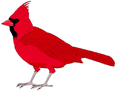
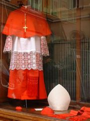

Sunday, April the 30th, 2006
back to: title, date or indexes
Our Antipodean researcher Glyn Webster discovered what he calls “an invaluable checklist for the Hooting Yard birdwatcher” on the wikipedia. This list of large cardinals may of course refer to Roman Catholic überpriests rather than to birds. The wikipedia page allows one to follow links to find out more about the cardinals it lists, which somehow is not as satisfying as a plain recitation, shorn of any detail.
Almost Ramsey cardinal, Erdos cardinal, Extendible cardinal, Huge cardinal, Hyper-Woodin cardinal, Inaccessible cardinal, Ineffable cardinal, Jónsson cardinal, Mahlo cardinal, Measurable cardinal, Ramsey cardinal, Reinhardt cardinal, Remarkable cardinal, Rowbottom cardinal, Shelah cardinal, Strong cardinal, Strongly compact cardinal, Subcompact cardinal, Subtle cardinal, Supercompact cardinal, Superstrong cardinal, Totally indescribable cardinal, Unfoldable cardinal, Weakly compact cardinal, Weakly hyper-Woodin cardinal, Woodin cardinal.
In an ideal world, “Woodin” above would be a misprint for “Wooden”, but alas, I know it is not so.

An ineffable cardinal (right) and the vestments of an unfoldable cardinal (left)
When I was a child, I remember once being taken to a cathedral to hear Mass said by a totally indescribable cardinal. I could witter on for ages about the cathedral and its environs, the altar servers and sacristans and the softly swaying thuribles, the taxidermist's crocodile hung in chains from the ceiling*, the choir and the candles, the stained glass and the eucharist and the benediction, but try as I might I will never be able to describe the totally indescribable cardinal, because he was, and I am sure remains to this day, totally indescribable.
*NOTE : See the quotation from Celeste Olalquiaga on 11th February.